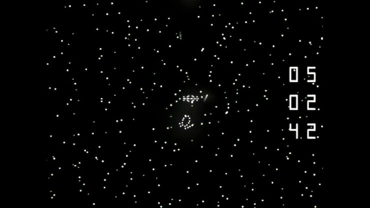
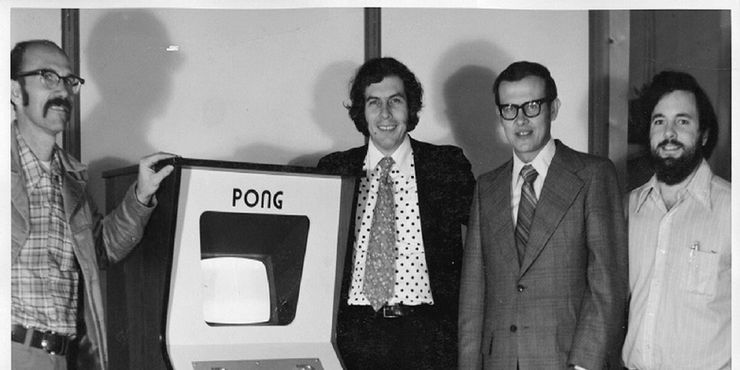
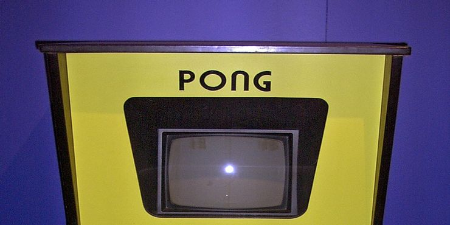
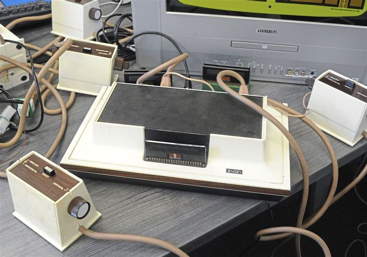
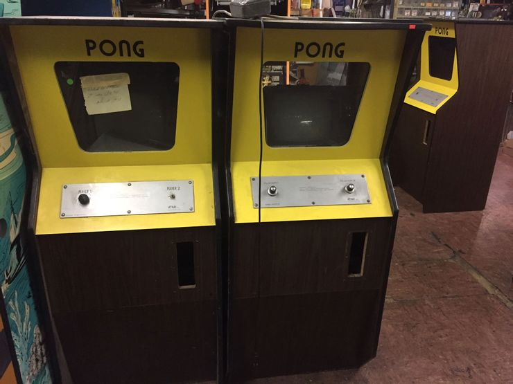
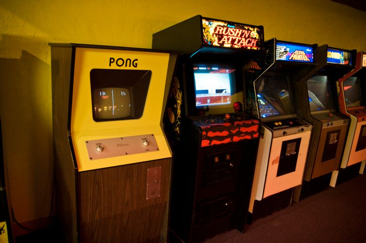
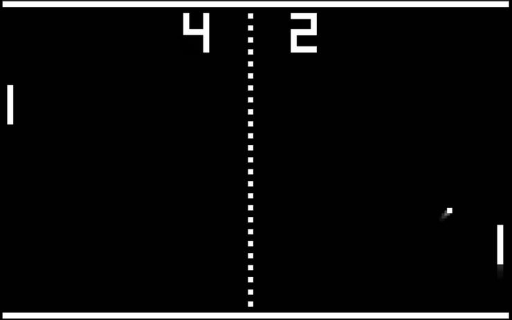
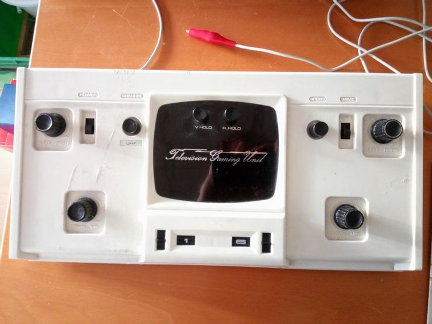
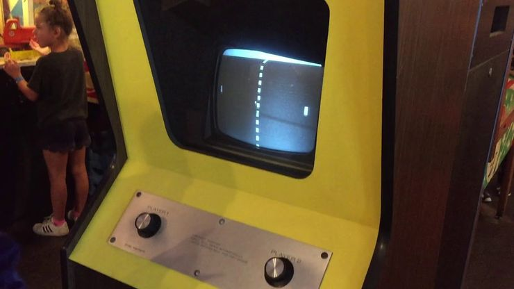

1
Het was niet de eerste arcade videogame
In tegenstelling tot wat de meeste mensen denken, was Pong niet
het allereerste videospel. Het eerste arcadespel was Computer
Space, dat slechts een jaar voor Pong werd uitgebracht, in 1971.
Computer Space was een arcadespel waarin een raket het opnam
tegen vliegende schotels in een sterrenveld, met raketten als de
enige wapens.

2
Het moest niet gepubliceerd worden
Toen Atari werd opgericht waren de oprichters, Nolan Bushnell en
Ted Dabney. Nadat zij Computer Space hadden gemaakt, namen zij
een ontwikkelaar in dienst, Allan Alcorn. Hij was een van hun
eerste werknemers, en zij vroegen hem een videospel te maken,
omdat hij nog geen ervaring had. Wat zij hem niet vertelden was
dat dit bedoeld was als een trainingsoefening, zodat zij er
zeker van konden zijn dat hij de nodige inspanning zou leveren.
Het spel dat Alcorn ontwikkelde was Pong. Het had alle elementen
die nodig waren om succesvol te worden, en toen Atari zich
realiseerde hoe goed het was, vervaardigden zij het en brachten
het vervolgens uit.

3
De eerste succesvolle arcade game
Pong is waarschijnlijk de belangrijkste reden waarom de
videospelletjesindustrie bestaat en zo lucratief is als het nu
is. Alleen al in het eerste jaar dat het spel uitkwam, werden er
meer dan 8.000 Pong-machines verkocht. Dit maakte het tot het
eerste commercieel succesvolle videospel ter wereld, en het kwam
zelfs in het Guinness Book of World Records terecht.
Uiteindelijk werden er meer dan 35.000 Pong-machines verkocht.
De overgebleven machines, als je ze kunt vinden, kosten een
aardige duit.

4
De eerste videogame rechtzaak
Een commercieel succesvol videospel zijn is niet het enige wat
Pong als eerste deed. Het aanzienlijke succes trok de aandacht
van Ralph Baer, die de Magnavox Odyssey uitvond, de allereerste
spelconsole voor thuisgebruik ter wereld. Hij merkte dat Pong
zwaar lijkte op een tafeltennisspel op de Magnavox Odyssey. In
april 1974 spande Magnavox een rechtszaak aan tegen Atari - de
eerste in zijn soort. Magnavox klaagde ook de imitators van Pong
aan, zoals Chicago Dynamics, Bally Midway en Allied Leisure.
Atari koos uiteindelijk voor een minnelijke schikking, omdat zij
zich de juridische kosten niet konden veroorloven, die zouden
zijn opgelopen tot ongeveer $ 1,5 miljoen.

5
Het eerste prototype brak af
Toen Atari het prototype voor Pong uitbracht in een plaatselijke
bar, hadden zij niet verwacht dat het zo snel stuk zou gaan; het
duurde slechts een paar dagen. Toen zij de machine
inspecteerden, ontdekten zij echter dat het defect niet was
veroorzaakt door de defecte machine zelf. De oorzaak was de
aanwezigheid van te veel munten in de automaat. Te veel mensen
speelden erop, waardoor het overliep met kwartjes. Atari
herstelde dit snel, en dat was maar goed ook, want Pong was een
machine die geld opbracht, en dat zou nog jaren zo blijven.

6
Het was duur
Ondanks zijn immense populariteit was Pong een duur spel. Atari
verkocht het voor ruwweg drie keer de productiekosten. En om
Pong te spelen, moest men een kwartje uitgeven voor één ronde.
Dit was drie keer zo duur als Pinball, de naaste concurrent van
Pong. Voor een kwartje kon een speler drie volledige spellen op
een flipperkast krijgen. Dit heeft de spelers echter niet
afgeschrikt. Volgens de medeoprichter van Atari, Nolan Bushnell,
bracht een Pong machine elke dag 35 tot 40 dollar op. Dit was
vier keer zoveel als de andere muntautomaten, wat in die tijd
ongehoord was.

7
Atatri wou het niet bouwen
Nadat zij Pong hadden ontwikkeld, wilde Atari de machines waarop
het spel zou worden gespeeld niet zelf fabriceren. In plaats
daarvan wilden zij het in licentie geven aan een groter
productiebedrijf. Zij benaderden Bally Manufacturing en Midway
Manufacturing en demonstreerden Pong aan hen. Bushnell
veranderde echter van gedachten nadat zij een prototype van het
spel hadden getest en het kapot was gegaan omdat het te veel
geld had opgebracht. Zij zochten toen financiering om het zelf
te vervaardigen.
Banken waren sceptisch omdat zij dachten dat het een uitloper
was van pinball, dat in die tijd geassocieerd werd met de
maffia. Maar Atari kreeg uiteindelijk een kredietlijn van Wells
Fargo.

8
Pong werd veel gekloond
Toen Pong werd uitgebracht, bereikte het een ongehoord succes.
Daarom maakten een aantal bedrijven hun eigen machines, die in
feite Pong kopieerden. Hiertoe behoorden Allide Leisure, Chicago
Dynamics, en Bally Midway.
Om hen tegen te werken, maakte Atari een aantal nieuwe producten
gebaseerd op Pong. Zo brachten zij in 1975 een console-versie
van het spel uit, getiteld Home Pong. In 1973 brachten zij ook
een vervolgspel voor vier spelers uit, dat zij Pong Doubles
noemden. Dit spel belandde in het Guinness Book of World Records
omdat het het eerste videospel voor vier spelers was.

9
Sociaal hulpmiddel
Pong was een spel voor meerdere spelers en de spelers hoefden
maar één hand te gebruiken. Het diende dus als een sociaal
hulpmiddel omdat het spelers hielp zich in het openbaar op hun
gemak te voelen in elkaars buurt. Spelers speelden gewoonlijk
schouder aan schouder, en degenen die wilden pronken, speelden
met hun zwakkere hand als handicap.
Volgens Bushnell groeiden veel mensen naar elkaar toe tijdens
het spelen van Pong. Sommigen van hen eindigden zelfs met een
huwelijk. Hij onthulde dat veel spelers hem hadden benaderd om
hem te laten weten dat zij hun echtgenoten hadden ontmoet
tijdens het spelen van het spel.

10
Pong heeft invloed gehad op de populaire cultuur
Pong was een spel voor meerdere spelers en de spelers hoefden
maar één hand te gebruiken. Het diende dus als een sociaal
hulpmiddel omdat het spelers hielp zich in het openbaar op hun
gemak te voelen in elkaars buurt. Spelers speelden gewoonlijk
schouder aan schouder, en degenen die wilden pronken, speelden
met hun zwakkere hand als handicap.
Volgens Bushnell groeiden veel mensen naar elkaar toe tijdens
het spelen van Pong. Sommigen van hen eindigden zelfs met een
huwelijk. Hij onthulde dat veel spelers hem hadden benaderd om
hem te laten weten dat zij hun echtgenoten hadden ontmoet
tijdens het spelen van het spel.
Bron:
https://www.thegamer.com/pong-fascinating-facts-first-video-game/